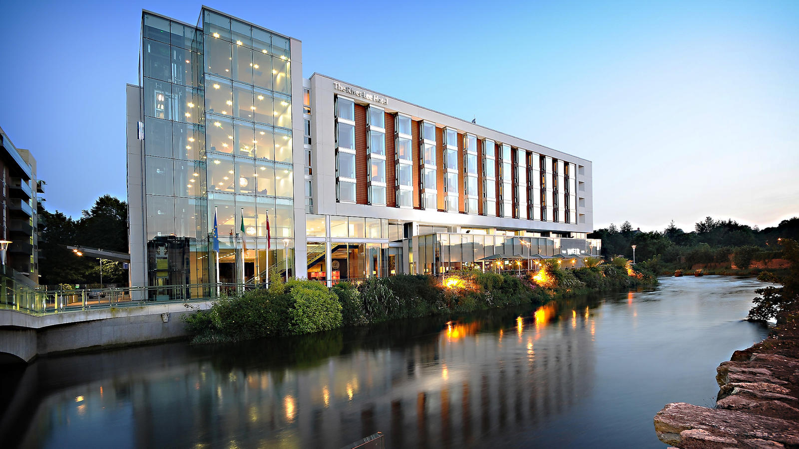
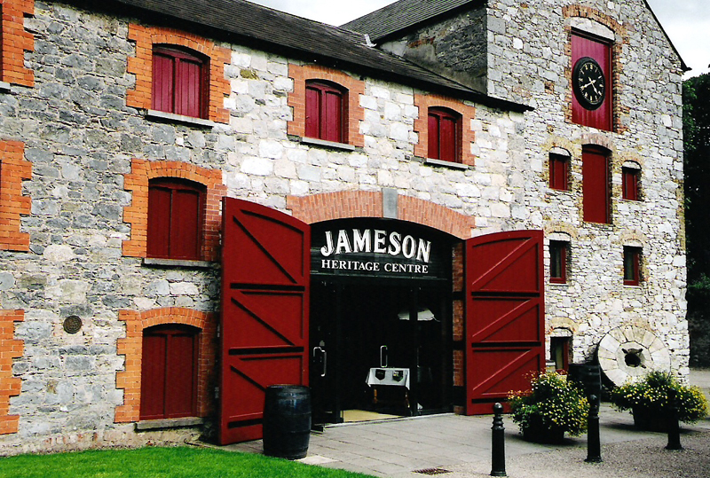
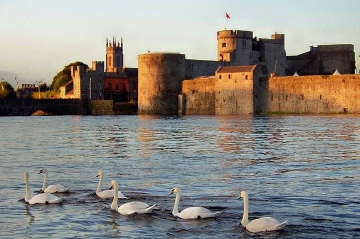
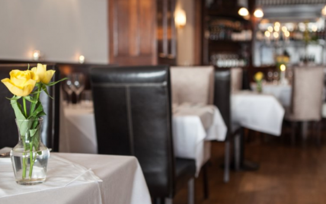

The River Lee is part of a collection of 8 hotels, the doyle collection. At the heart of the business is a warmth of service that stems from our family ownership, imbuing the properties with the familiarity of a members club and the intimacy of a private home. Each of our eight hotels – landmark buildings in unrivalled city locations, has its own distinct personality that is rooted in, and authentic to, its neighbourhood.
The Jameson Experience is a guided tour that really embraces Ireland’s culture and history. See the triple distillery process in ages casks before sipping on a sample of the fine Irish Whiskey in their cocktail lounge. In 1975 we moved our ever expanding operation to the green expanses of Midleton, Co. Cork. Midleton seemed to have everything we need as well as the extra space for visitors.
An obdurate and brooding Norman mass over the River Shannon, Limerick's showpiece castle, with its vast curtain walls and towers, was built on the orders of King John of England between 1200 and 1212. The massive twin gate towers still stand to their full height. A multimedia experience that provides an excellent potted history of Ireland in general, and Limerick in particular, is followed by exposed archaeology in the undercroft and a tour of the courtyard and fortifications.
Pat O' Donovan and his head chef Ian Cronin, have created a relaxed environment serving excellent local produce. Along with the regular favourites, the menu offers seasonal specialities such as fresh fish from Ballycotton, while pheasant is popular in winter. The wine list also changes regularly, reflecting some of the best and more interesting wines available. O'Donovans restaurant opened in 2000, continuing the tradition of great food started in O'Donovans bar, which was a family run bar for 3 generations
